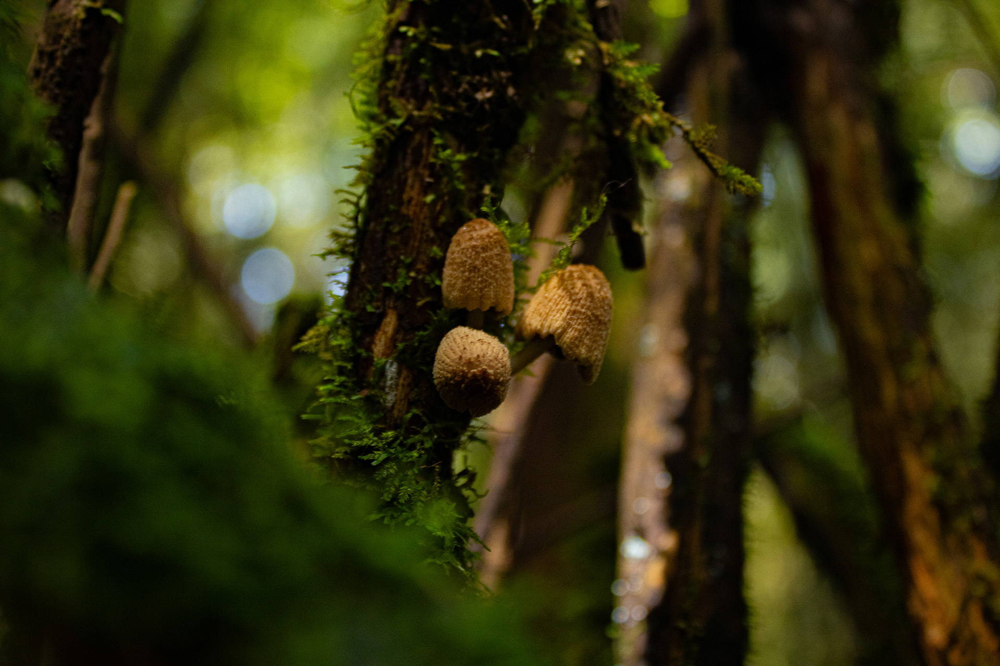
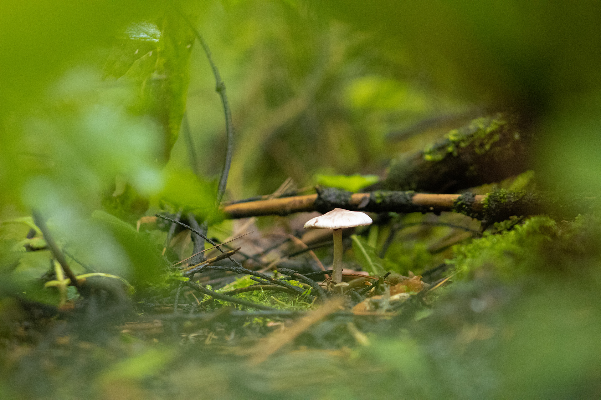
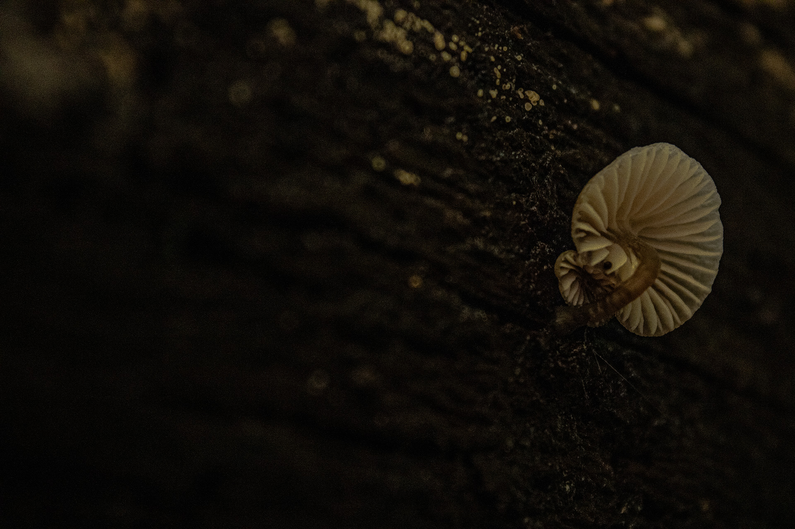

titulo




titulo

titulo

titulo



titulo

SUILLUS GRANULATUS
Hongo micorrícico asociado principalmente con pinos.
Hábitat:
Bosques, principalmente asociado con pinos.
Función:
Conecta con las raíces para intercambiar agua, nutrientes y carbono.
Wood Wide Web:
Relación directa.
Conexión:
Pino ↔ hongo ↔ suelo
SUILLUS SP.
Hongo micorrícico asociado con las raíces de los pinos.
Hábitat:
Suelo de bosque, musgo y materia vegetal.
Función:
Forma asociaciones con las raíces de los pinos para obtener agua y nutrientes.
Wood Wide Web:
Relación directa.
Conexión:
Pino ↔ hongo ↔ micelo ↔ suelo
INOCYBE GEOPHYLLA
Hongo micorrícico asociado con las raíces de los árboles.
Hábitat:
Suelo de zonas boscosas, cerca de árboles.
Función:
Forma micorrizas con árboles y ayuda en la obtención de agua y nutrientes.
Wood Wide Web:
Relación directa.
Toxicidad:
Venenoso.
Conexión:
Hongo ↔ raíces ↔ red de micelo
MONOTROPA UNIFLORA
Planta micoheterótrofa que obtiene nutrientes mediante hongos asociados a las raíces de los árboles.
Hábitat:
Suelo, asociada a hongos micorrícicos y raíces de árboles.
Función:
Obtiene recursos a través de hongos asociados con las raíces de los árboles
Wood Wide Web:
Relación directa mediada por hongos.
Toxicidad:
Venenosa, según los apuntes.
Conexión:
Árbol ↔ hongo ↔ monotropa uniflora
TOMITOPSIS SP.
Hongo micorrícico asociado principalmente con pinos.
Hábitat:
Árboles y madera.
Función:
Descompone la madera у ayuda a devolver sus nutrientes al suelo.
Wood Wide Web:
Relación indirecta.
Conexión:
Madera ↔ hongo ↔ nutrientes ↔ suelo
MYCENA SEYNESII
Hongo descomponedor que crece sobre piñas de pino caídas y ayuda a reciclar nutrientes.
Hábitat:
Suelo de bosque, musgo y materia vegetal.
Función:
Descompone materia vegetal y ayuda a reciclar sus nutrientes hacia el suelo.
Wood Wide Web:
Relación indirecta.
Conexión:
Piña ↔ hongo ↔ nutrientes ↔ suelo